Tienda de Antigüedades
Descubre piezas únicas con historia y alma seleccionadas para coleccionistas
Fundada en 1910 como un pequeño taller de restauración en el corazón del casco antiguo, nuestra tienda ha sido el hogar de los apasionados del coleccionismo durante generaciones. Lo que comenzó como una búsqueda personal de piezas únicas se convirtió en un legado familiar dedicado a rescatar y preservar fragmentos del pasado.
Hoy, más de un siglo después, mantenemos intacto nuestro compromiso: descubrir objetos con alma y devolverles el lugar que merecen. Desde el mobiliario noble que presenció grandes épocas hasta reliquias cinematográficas, joyas exclusivas y antigüedades nostálgicas, cada pieza de nuestra colección cuenta una historia. Te invitamos a adentrarte en nuestro catálogo y encontrar ese tesoro único que conecte con tu propia historia.
Nuestras Colecciones
Mobiliario
Joyería y Arte
Multimedia
Juguetes y
Coleccionables
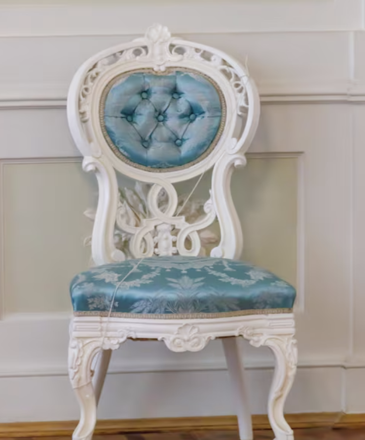
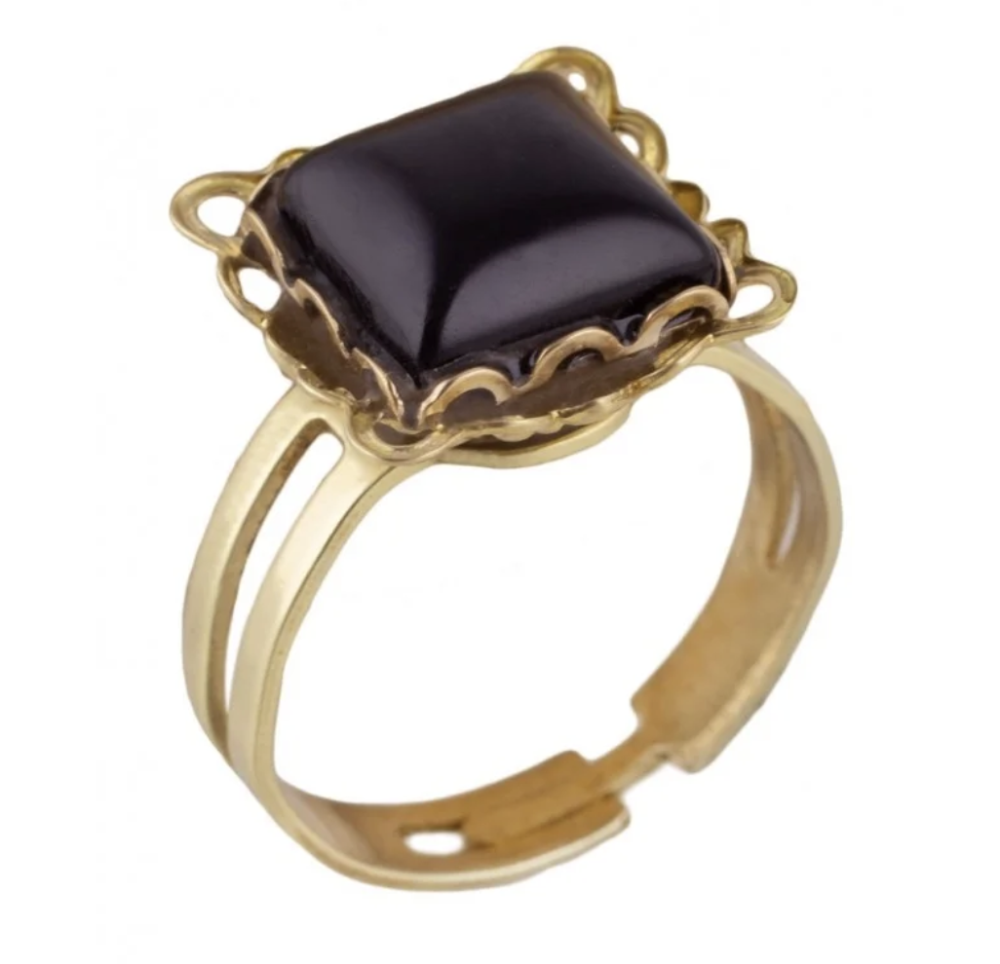
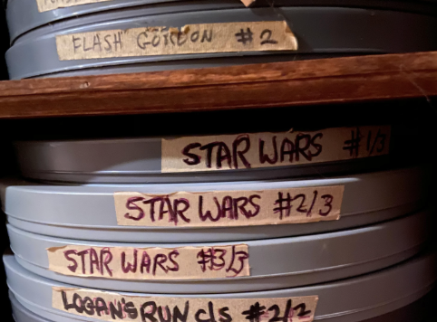
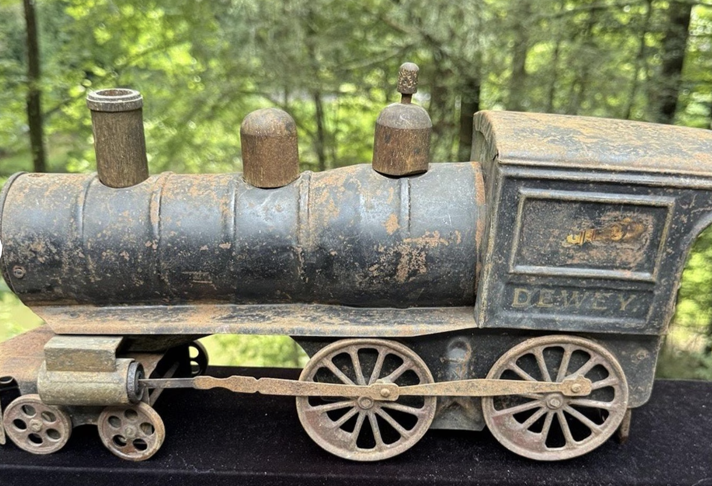
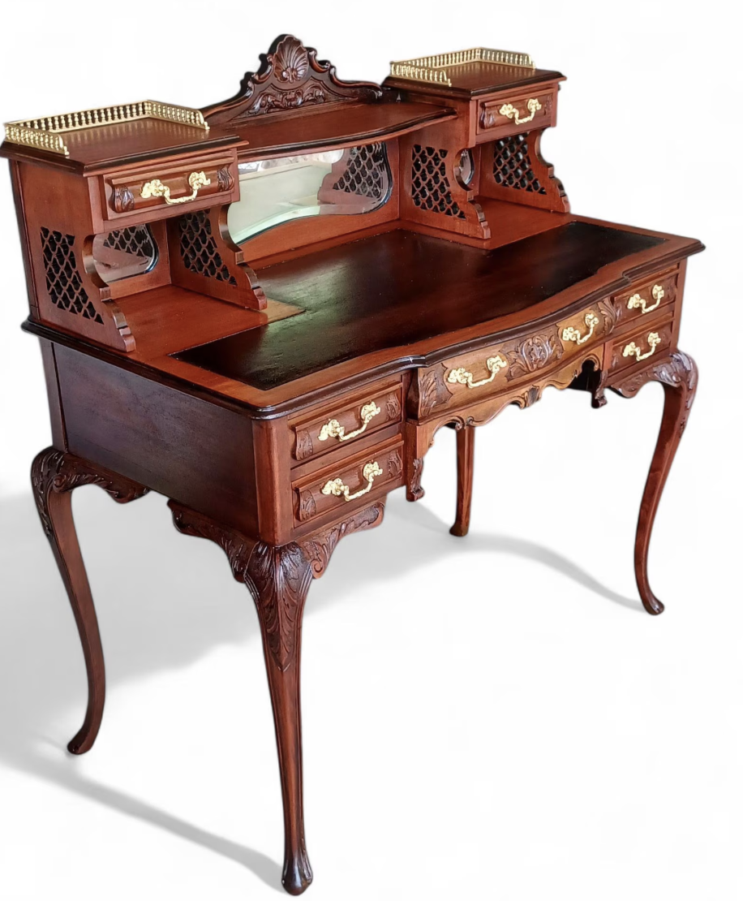
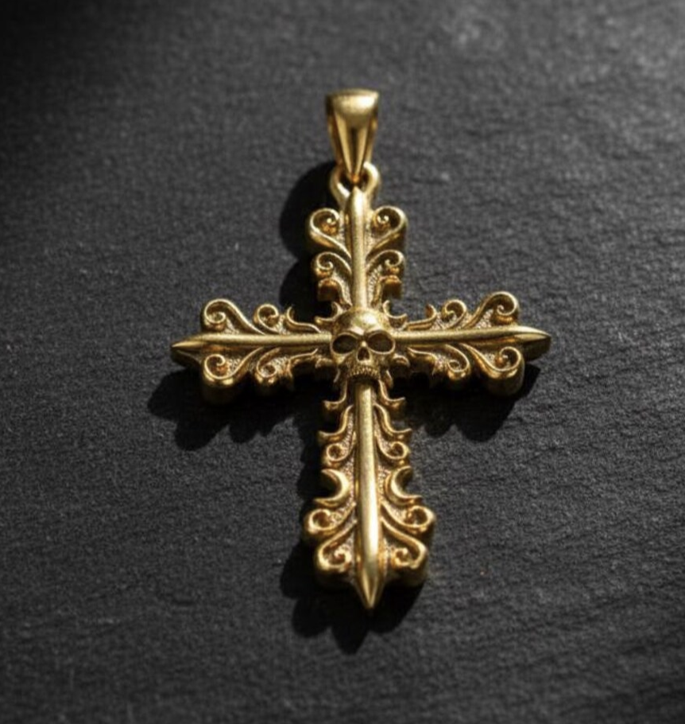
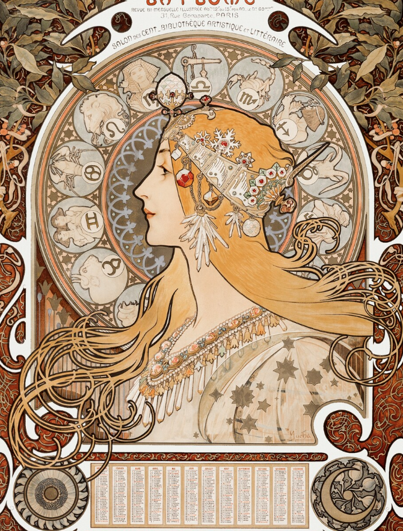
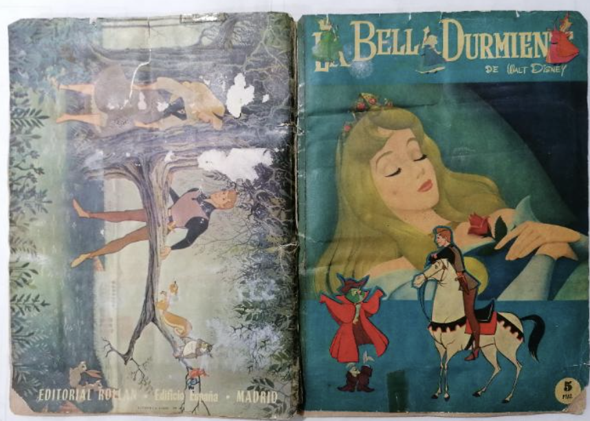
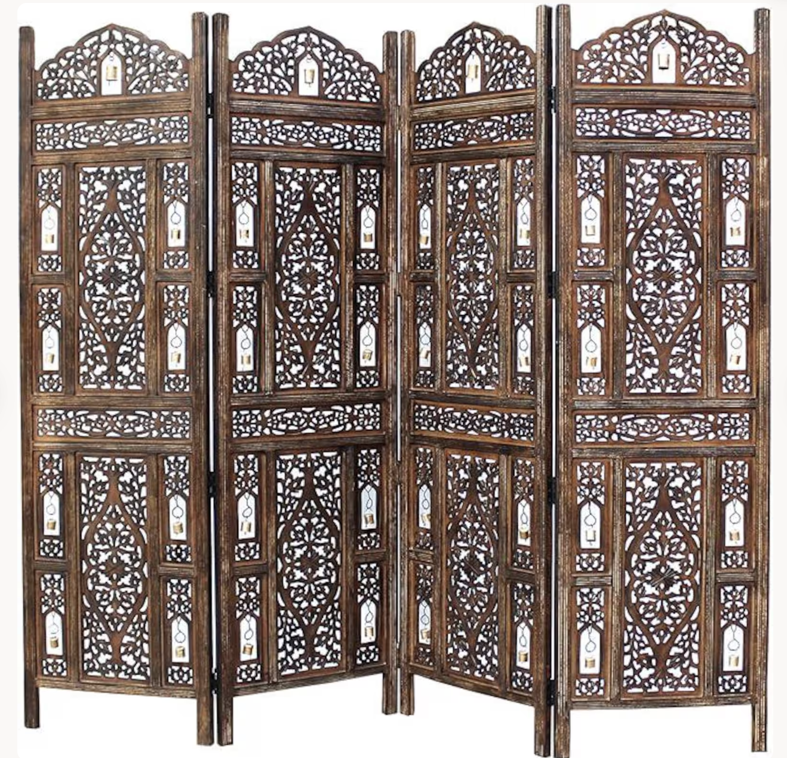
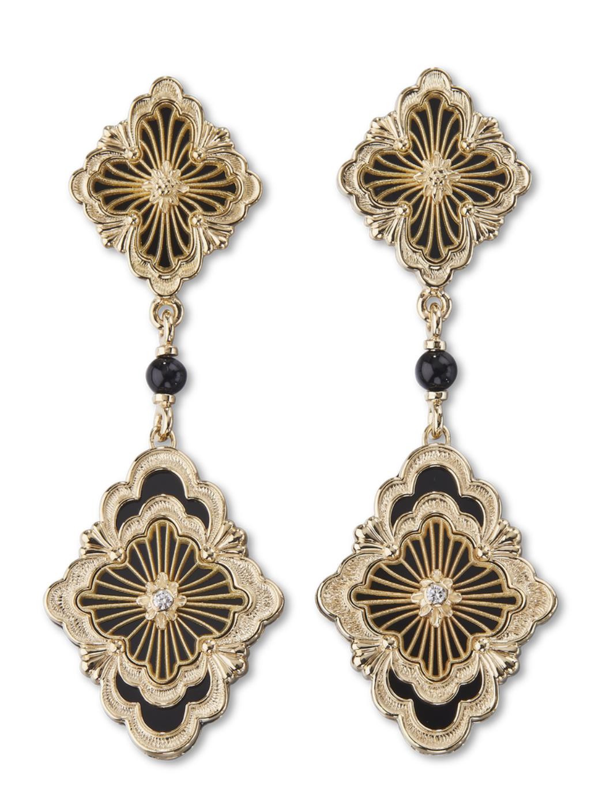
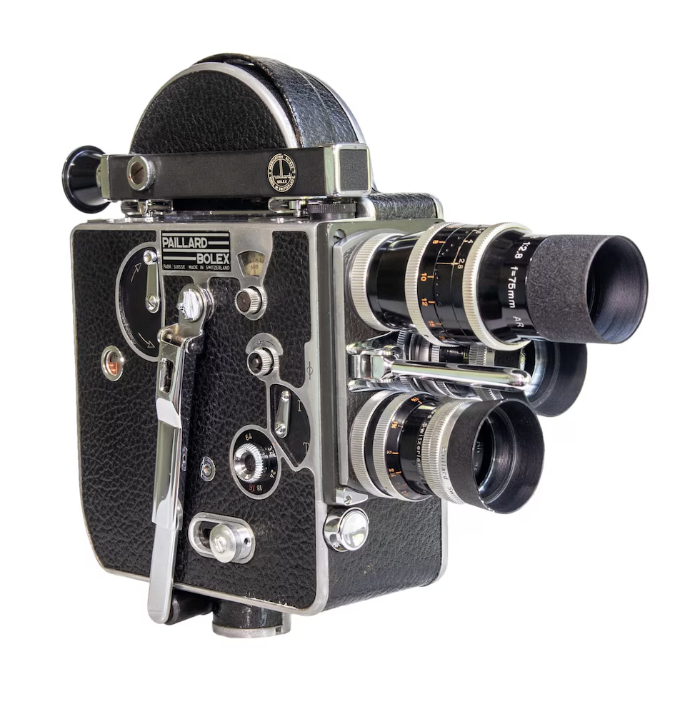
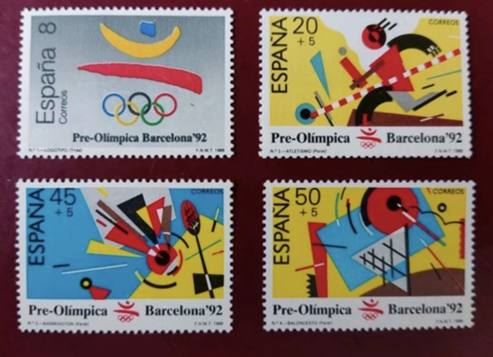
Cuadro payaso óleo
- Proyector de cine super-8 mm
- Póster película Pulp Fiction
- Radio de válvulas
- Discos de vinilo de jazz
- Camión de madera
- Monedas francesas del siglo diecinueve
- Juguete radio miniatura